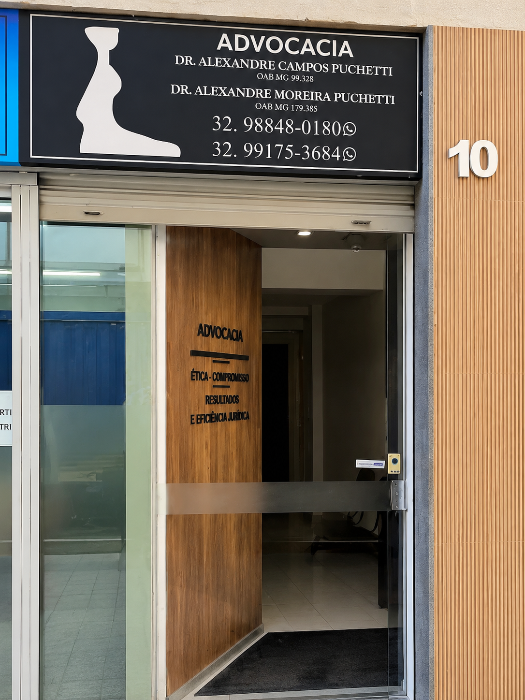
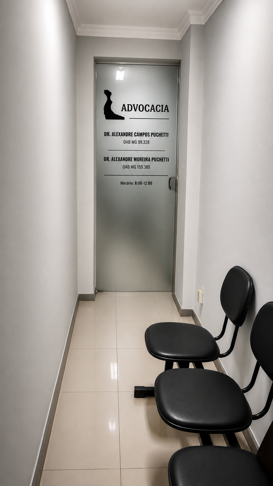
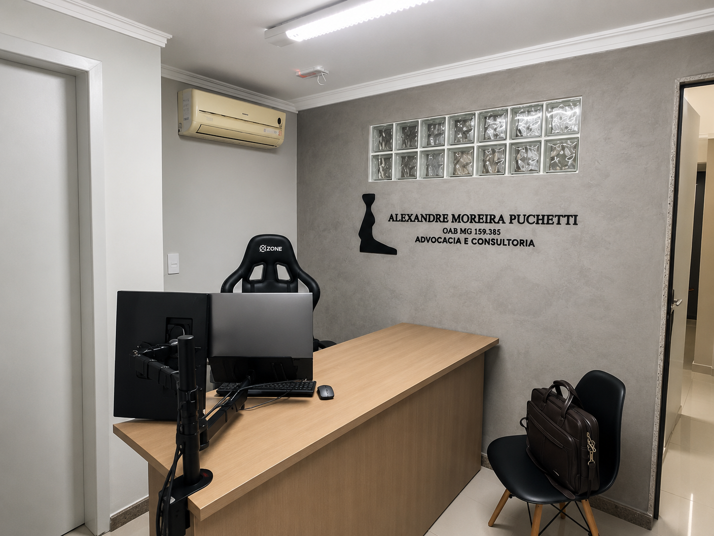
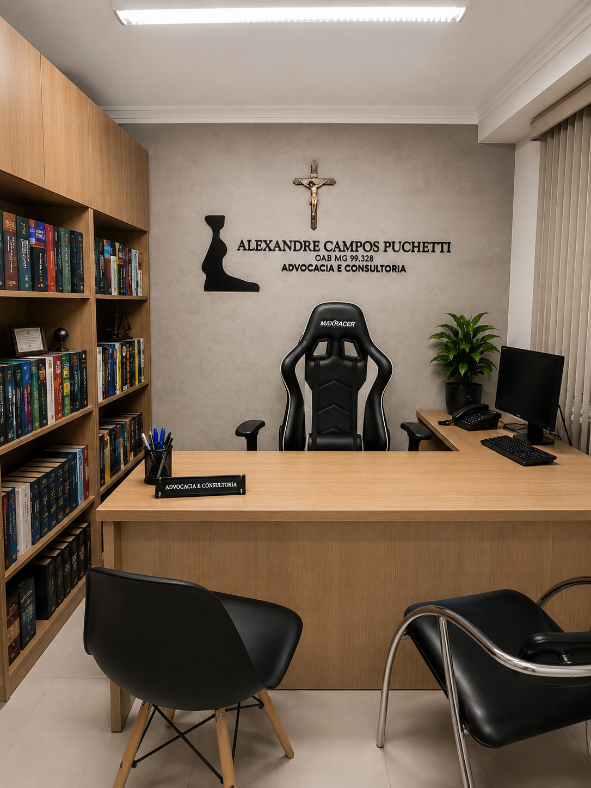

Advocacia em Muriaé/MG
Assessoria jurídica técnica para decisões importantes
Atendimento em Direito Bancário, Defesa do Produtor Rural, Direito da Saúde, Direito Previdenciário, Família, Sucessões e medidas judiciais ou administrativas estratégicas.
Atendimento personalizado
Análise individual do caso
Comunicação clara
Atendimento em Muriaé/MG e análise de demandas conforme a natureza do caso.
Escritório de advocacia
Atendimento jurídico com organização, serenidade e análise documental.
Alexandre Campos Puchetti Advocacia é um escritório sediado em Muriaé/MG, com atuação consultiva e contenciosa. O trabalho é desenvolvido mediante análise individualizada de cada situação, orientação clara ao cliente e definição da estratégia jurídica adequada às circunstâncias do caso.
Precisa de orientação jurídica sobre uma situação específica?
Falar com o advogadoEstrutura real
Ambiente organizado para atendimento jurídico presencial e análise reservada.
As fotografias apresentam a entrada, o corredor e salas do escritório em Muriaé/MG, reforçando uma experiência de atendimento clara, profissional e acolhedora.




Áreas de atuação
Antes de uma medida jurídica, cada situação precisa ser compreendida com cuidado.
As áreas abaixo apresentam temas frequentemente analisados pelo escritório. A viabilidade de qualquer medida depende de avaliação individual do caso.
Direito Bancário e Defesa do Devedor
Recebeu cobrança judicial, busca e apreensão, execução ou questionamento sobre contrato bancário? A análise individual permite compreender riscos e alternativas.
Saiba maisDefesa do Produtor Rural
Contratos rurais, cobranças, CPR, execuções e dificuldades de pagamento exigem leitura técnica da operação e da documentação.
Saiba maisDireito da Saúde
Negativas de tratamento, medicamento, internação ou cobertura precisam ser avaliadas com base em documentos médicos e circunstâncias do caso.
Saiba maisDireito Previdenciário
Benefícios do INSS dependem de requisitos legais, histórico contributivo, documentos e análise administrativa ou judicial.
Saiba maisDireito de Família
Divórcio, guarda, alimentos e partilha exigem orientação clara, sensibilidade e cuidado com os direitos envolvidos.
Saiba maisDireito das Sucessões
Inventários, partilhas e transmissão patrimonial pedem organização documental e avaliação dos herdeiros e bens envolvidos.
Saiba maisMandado de Segurança e Direito Administrativo
Atos públicos, concursos, servidores, saúde e educação podem demandar medidas específicas diante dos requisitos legais.
Saiba maisPrecisa falar sobre alguma dessas áreas?
Falar com o advogadoComo funciona o atendimento
Um processo objetivo para compreender o caso antes de indicar medidas.
Contato inicial
O cliente relata a situação pelos canais de atendimento disponíveis.
Relato da situação
São identificados os pontos principais, prazos, partes envolvidas e urgência.
Análise de documentos
Os documentos são avaliados para compreensão dos riscos e alternativas.
Orientação jurídica
As medidas juridicamente adequadas são apresentadas conforme o caso concreto.
O envio de mensagem não implica contratação automática. A viabilidade da medida depende da análise dos fatos, dos documentos e da legislação aplicável.
Quer entender quais documentos podem ser necessários?
Iniciar atendimento pelo WhatsAppOrientação jurídica
Por que procurar orientação antes de tomar uma decisão?
A orientação jurídica permite compreender riscos, avaliar documentos, prevenir perda de prazos e definir alternativas judiciais ou extrajudiciais de forma compatível com os fatos apresentados.
Compreensão dos riscos jurídicos
Análise de documentos relevantes
Definição de estratégia adequada
Prevenção de perda de prazos
Avaliação de alternativas judiciais e extrajudiciais
Sobre o advogado
Atendimento próximo, técnico e individualizado.
Dr. Alexandre Campos Puchetti, inscrito na OAB/MG sob o nº 99.328, é pós-graduado em Direito Processual Civil, com atuação também voltada a defesa em execuções de títulos executivos judiciais e extrajudiciais.
O atendimento é conduzido com relato inicial, solicitação dos documentos pertinentes, avaliação dos riscos e indicação das medidas juridicamente adequadas, sempre sem promessas de resultado.
Falar com o escritórioPerguntas frequentes
Informações iniciais para orientar seu contato.
Como solicitar atendimento?
O contato inicial pode ser feito pelo WhatsApp, telefone ou formulário do site. A continuidade depende da análise das informações apresentadas.
Quais documentos devo enviar?
Os documentos variam conforme a área. Em geral, podem ser solicitados documentos pessoais, comprovantes, contratos, notificações e arquivos relacionados ao caso.
Quanto tempo demora uma ação?
O prazo depende da complexidade, da documentação, da comarca, da conduta das partes e do andamento do órgão competente. Não e possível garantir prazo.
E possível atendimento online?
Algumas demandas podem ser analisadas a distância, conforme a natureza do caso, os documentos disponíveis e as regras aplicáveis.
Como funciona a contratação?
A contratação ocorre somente após análise inicial, esclarecimento das medidas possíveis, definição dos honorários e formalização adequada.
Como são definidos os honorários?
Os honorários são definidos após avaliação da demanda, complexidade, documentos disponíveis e medidas necessárias.
O envio de documentos garante o ajuizamento da ação?
Não. A adoção de qualquer medida depende de análise individual dos fatos, dos documentos e da legislação aplicável.
Posso enviar documentos pelo WhatsApp?
O WhatsApp pode ser usado para contato inicial. Documentos sensíveis devem ser enviados apenas quando houver orientação adequada sobre o canal de envio.
O atendimento presencial precisa ser agendado?
Para melhor organização do atendimento, recomenda-se contato prévio pelo WhatsApp ou telefone.
O escritório atende em Muriaé/MG?
Sim. O escritório está localizado no Centro de Muriaé/MG, na Rua Coronel Marciano Rodrigues, nº 151, Loja 10 B.
O escritório atua em demandas contra bancos?
Sim. Demandas bancárias, execuções, cobranças, busca e apreensão, revisão contratual e instrumentos financeiros podem ser analisados.
O produtor rural pode solicitar análise de dívida?
Sim. Contratos rurais, cobranças, CPR, financiamentos, garantias e execuções podem ser avaliados conforme a documentação.
O escritório atua em ações de saúde?
Sim. Tratamentos, medicamentos, internações e coberturas negadas podem ser analisados conforme documentação médica.
O escritório analisa benefícios do INSS?
Demandas previdenciárias são avaliadas com base em documentos, histórico contributivo e requisitos legais.
O escritório realiza inventários?
Inventários judiciais e extrajudiciais podem ser analisados conforme documentação, bens envolvidos e situação dos herdeiros.
Casos de família exigem quais documentos?
Podem ser solicitados documentos pessoais, certidões, comprovantes de renda, comprovantes de despesas e documentos relacionados aos filhos ou bens.
Quando cabe mandado de segurança?
A possibilidade depende da existência de direito líquido e certo, ato de autoridade, prazo e documentação adequada.
O primeiro contato cria contratação automática?
Não. O envio de mensagem ou formulário não implica contratação automática.
O escritório garante resultado?
Não. Nenhum resultado pode ser garantido. A atuação jurídica depende dos fatos, documentos e decisão dos órgãos competentes.
Como acompanhar meu caso?
O acompanhamento é definido conforme a demanda, a forma de contratação e os canais combinados no atendimento.
Contato
Precisa de orientação jurídica sobre uma dessas situações?
Entre em contato para relatar o caso e receber informações sobre a análise documental e as possibilidades de atendimento.
Falar com o Dr. Alexandre pelo WhatsAppLocalização
Atendimento em Muriaé/MG
Rua Coronel Marciano Rodrigues, nº 151, Loja 10 B, Centro, Muriaé/MG, CEP 36880-027.